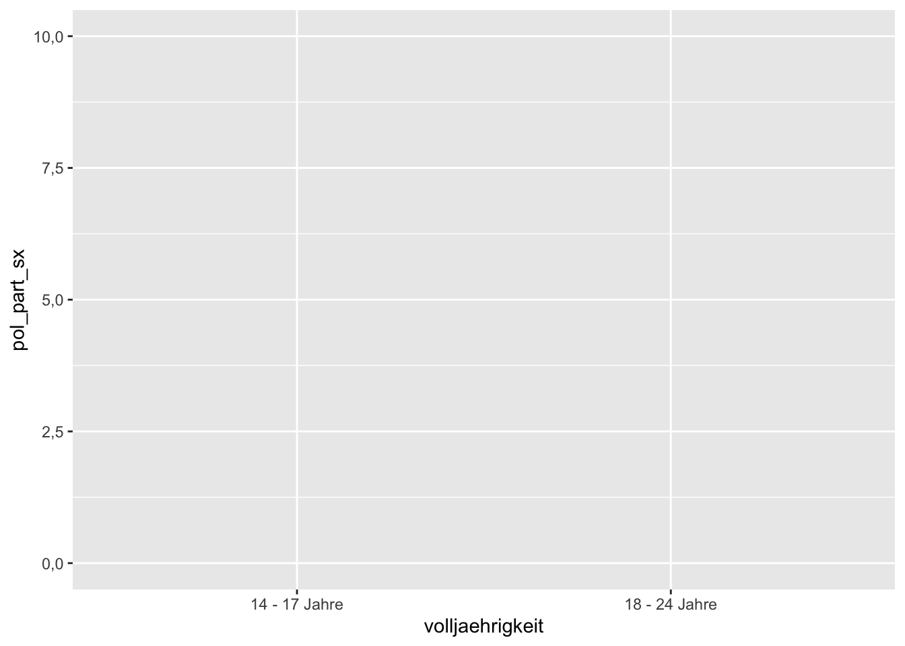
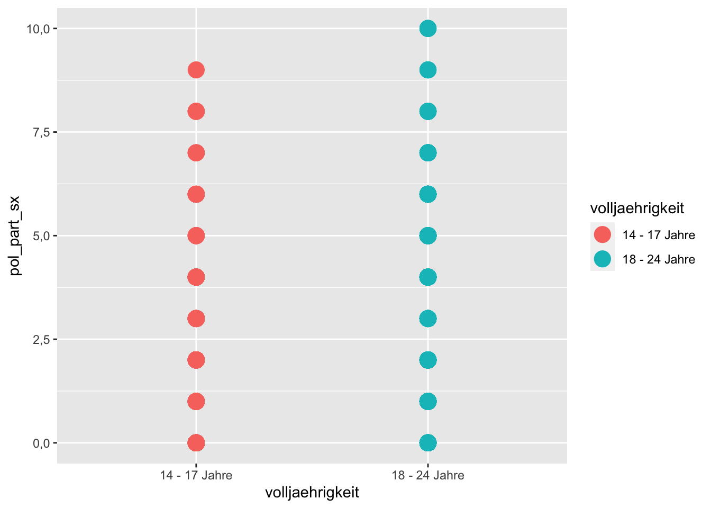
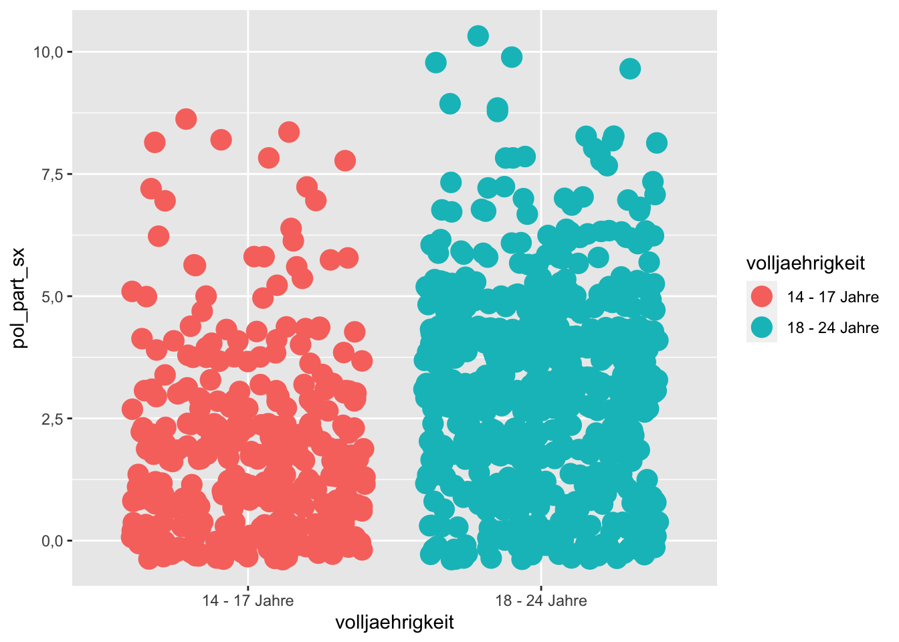
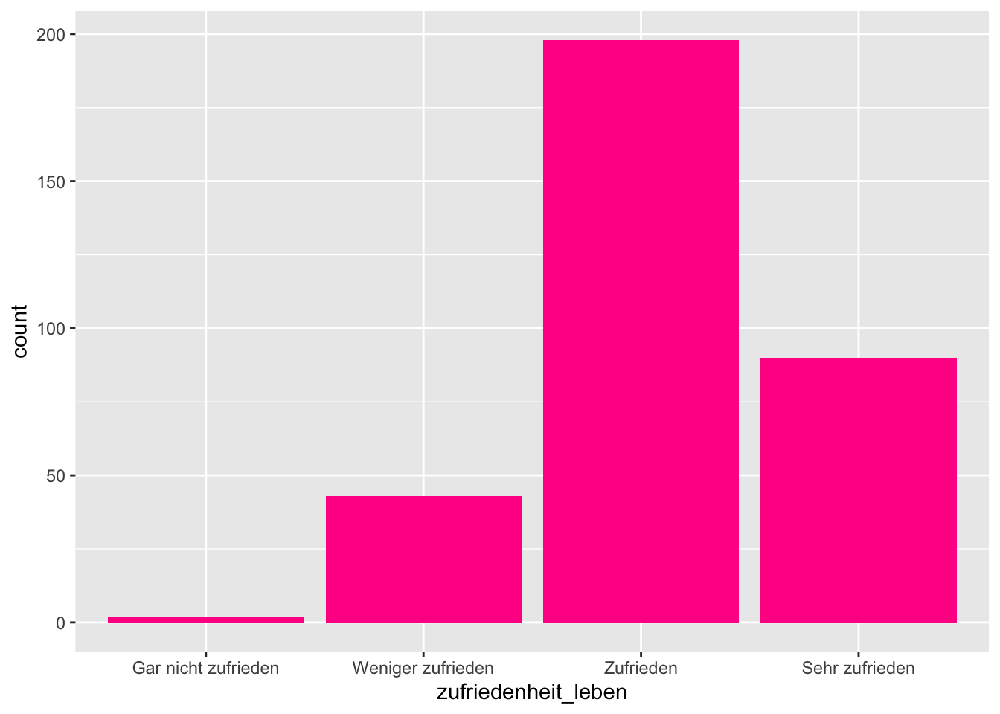

Kapitel 9 Grafiken
Grafiken erfüllen bei der Datenanalyse zwei sehr wichtige Funktionen: Zum einen dienen Sie der explorativen Analyse und helfen dabei, selbst ein besseres Verständnis für die eigenen Daten zu entwickeln. Zum anderen dienen Grafiken aber auch dazu, die Ergebnisse der eigenen Analyse darzustellen um sie anderen mitzuteilen.
In den vorhergehenden Kapiteln haben wir erste Grafiken bereits kennengelernt (z.B. Balkendiagramme und Streudiagramme). In diesem Kapitel möchte ich aber detaillierter darauf eingehen, wie Grafiken mit R erzeugt werden können. Wie so oft gibt es dazu verschiedene Wege. Auch base-R bietet einige Funktionen, mit denen Grafiken schnell erzeugt und individuell angepasst werden können. Leider ist dieses Anpassen in base-R für R-Anfänger gar nicht so einfach. Da das Anpassen einer Grafik aber nahezu immer nötig ist, gehe ich hier deshalb nicht auf die base-R-Funktionen zum Erzeugen von Grafiken ein.
Selbstverständlich gibt es auch über das tidyverse einen Weg, statistische Grafiken herzustellen. Das entsprechende Paket heißt ggplot2. Es beruht auf der Grammar of Graphics (mehr zum Hintergrund finden Sie hier). Die Idee dahinter ist, dass eine Grafik aus mehreren Layern zusammengesetzt ist. Das kann man sich einerseits ein bisschen so wie bei einem Overhead-Projektor (kennen Sie solche Geräte noch?) vorstellen, bei dem man mehrere transparente Folien übereinanderlegt und dann ein gemeinsames Bild erzeugt – oder wie die Ebenen bei Photoshop. Andererseits sind Layer auch die „Stellschrauben“ mit denen man am Aussehen einer Grafik drehen kann.
Das Paket ggplot2 ist sehr sensibel, was die Daten angeht, die als Input für die Grafiken dienen. Diese müssen auf jeden Fall tidy sein und bisweilen wird ein long format benötigt. Dazu später mehr.
9.1 Drei Basis-Funktionen
Möchte man eine Grafik mit `ggplot2 erzeugen benötigt man mindestens die folgenden drei Funktionen. Aber natürlich kann man jede Grafik noch komplexer machen und umgestalten, wenn man weitere Funktionen hinzufügt.
Die Basis-Funktionen von ggplot2 sind:
ggplot(): Diese Funktion ist immer der erste Schritt. Durch die Funktion wird einen sogenanntes Plot-Objekt angelegt, also die Grafik an sich. Die Funktion erhält als erstes Argument das Datenobjekt, auf dem die Grafik basieren soll. Zu Beginn ist der Plot leer.
aes(): Mit dieser Hilfsfunktion wird das aesthetic mapping definiert. Über das *aesthtic mapping können wir bestimmen, wie Daten/Variablen in Formatierung übersetzt werden sollen.
geom_(): Es gibt unterschiedliche geom_()-Funktionen. Ein Geom ist ein geometisches Objekt, dass auf dem Plot platziert werden soll, z.B. ein Balkendiagramm (geom_bar()) oder eine horizontale Linie (geom_hline()). Eine statistische Grafik benötigt mindestens ein Geom, kann aber auch mehrere enthalten.
Zusätzlich gibt es in ggplot noch eine Besonderheit: Der Operator + wird in diesem Paket dazu eingesetzt, um die einzelnen grafischen Elemente (oder Layer) zusammenzufügen. Das Pluszeichen steht immer nach einem Befehl, wenn ein Plot noch nicht beendet ist und noch ein weiteres Element hinzugefügt werden soll (so ähnlich wie die Pipe). Das + steht immer am Ende der Zeile, nie am Beginn.
Im Zusammenspiel sieht das so aus (Pseudocode):
ggplot(data = data, mapping = aes(x = var_1)) +
geom_bar()In tidyverse-Schreibweise auch so:
data %>%
ggplot(mapping = aes(x = var_1)) +
geom_bar()Und verkürzt kann man die Namen der Argumente weglassen. Routinierte R-Anwender tun dies häufig, deshalb sollten Sie das mal gesehen haben:
data %>%
ggplot(aes(var_1)) +
geom_bar()Um explizit zu machen, was jeweils passiert, werden wir hier aber die ausführliche Schreibweise nutzen.
Im Folgenden wollen wir uns natürlich ein paar Grafiken und Formatierungsmöglichkeiten anschauen. Allerdings ist ggplot so umfangreich, dass wir die Funktionen nicht annähernd durchgehen können. Für dieses Kapitel gilt daher im besonderen Maß: Wenn Sie eine Formatierung vornehmen möchten, die hier nicht angesprochen wird, googeln Sie danach! Die Möglichkeiten der Gestaltung mit ggplot2 sind schier unendlich.
Als Datenbeispiel benutzen wir auch in diesem Kapitel den Generation Z-Datensatz. Die erste Grafik, die wir hier erstellen wollen, thematisiert die politische Partizipation der Befragten und zwar getrennt für Jugendliche und junge Erwachsene. Ich werde anhand von diesem Beispiel auch noch einmal den Einsatz der drei „Basis-Funktionen“ beschreiben.
9.2 Erste Funktion: Plot-Objekt erstellen
Jede ggplot2-Grafik beginnt immer mit dieser Funktion und der Übergabe von einem Datenobjekt als erstem Argument. Dabei ist es egal, ob wir die Base-R oder die tidyverse-Schreibweise wählen.
p <- df %>%
ggplot()9.3 Zweite Funktion: Aesthetik Mapping
Die ggplot() kann noch ein zweites Argument haben, nämlich mapping =. Über dieses Argument wird das aesthteic mapping festgelegt. Wie bereits beschrieben, betrifft dies die Zuordnung von Daten im Datensatz zum Aussehen der fertigen Grafik. Man muss quasi beschreiben, wie die die Daten in Layout übersetzt werden sollen.
Das Mapping geschieht über die Hilfsfunktion aes(). Diese Funktion benötigt Argumente, damit sie die Formatierung umsetzen kann:
p <- df %>%
ggplot(mapping = aes(x = volljaehrigkeit,
y = pol_part_sx))Zwingende Argumente
In unserem Beispiel möchten wir die Gruppierungsvariable „Volljährigkeit“ auf der X-Achse darstellen und die metrische Variable „politische Partizipation“ auf der Y-Achse. Die beiden Argumente für die aes() heißen entsprechend x und y. Diese beiden Argumente für die Achsen werden von Geomen häufig vorausgesetzt, damit das entsprechende Geom überhaupt erzeugt werden kann (zwingende Argumente). Einige Geome benötigen aber auch nur das x-Argument (z.B. ganz einfache Häufigkeitsverteilungen von einzelnen Variablen).
Optionale Argumente
Die aes()-Funktion kann zusätzlich zu den zwingenden Argumenten für die Achsen auch optionale Argumente haben. Argumente wie fill (Farbe der Füllung), color, size, shape, linetype oder group kann man dazu benutzen, die Formatierung der Grafik zusätzlich durch Variablen zu verändern.
In unserer Grafik bietet es sich an, die Gruppenzugehörigkeit nicht nur durch die Anordnung der Gruppenvariable auf der X-Achse, sondern zusätzlich noch durch Farbe zu unterstreichen.
p <- df %>%
ggplot(mapping = aes(x = volljaehrigkeit,
y = pol_part_sx,
color = volljaehrigkeit))Das Mapping kann übrigens entweder gleich zu Beginn der Grafik in der Funktion ggplot() passieren, dann gilt es für den gesamten Plot. Oder es steht in einer geom_()-Funktion (nächster Schritt), dann gilt dieses Mapping nur für das spezifische Geom. Hat man nur ein Geom, ist es egal wo es steht.
9.4 Dritte Funktion: Geom hinzufügen
Das soeben erzeugte Objekt p ist leer. Zwar existiert schon eine Zuordnung der Daten zu den Achsen, aber eine Grafik wurde bisher nicht erzeugt:
# plot ausgeben
p 
Wie auch? Wir haben ja noch gar nicht festgelegt, um was für eine Art Grafik es sich handeln soll! Über den Operator + können wir dem Plot Geome hinzufügen. Wir addieren sozusagen geome zum Plot dazu: p + geom_().
9.4.1 Streudiagramm
Im ersten Schritt erstellen wir ein Streudiagramm mit geom_point().
Jedes Geom hat noch weitere (optionale) Argumente, die man entweder im aesthetic mapping verwenden kann um Variablen zuzuweisen oder man kann das allgemeine Layout dadurch verändern. Wir könnten beim Streudigramm z.B. zusätzlich zur Farbe auch die Größe der Punkte über size verändern oder ihre Form über shape.
Im Beispiel nutzen wir das zusätzliche Argument size = 5
# Streudiagramm
p + geom_point(size = 5)
Juhu, es hat funktioniert! Die Datenpunkte sind auf der Y-Achse angeordnet und in zwei Gruppen aufgeteilt. Die Darstellung ist jedoch suboptimal, denn die Punkte überlagern sich, sie werden vielfach übereinander geplottet. Dadurch kann man nicht wirklich gut sehen, wie sie sich verteilen.
9.4.2 Jitter-Plot
Abhilfe schafft ein alternatives Geom, nämlich geom_jitter(). Beim Jitter-Plot wird jedem Punkt eine random Abweichung von den Achsen zugewiesen, so dass die Punkte zufällig streuen. Sie überlagern sich dadurch nicht mehr:
# Jitter-Plot
p + geom_jitter(size = 5)
Mit dem Argument width kann man die Breite dieser Streuung bestimmen und mit alpha die Transparenz der Punkte. Probieren wir es aus:
# Jitter-Plot
p + geom_jitter(size = 5, width = 0.2, alpha = 0.2)Die Darstellung ist ganz schön, aber es gibt weitere Alternativen.
9.4.3 Boxplot
Eine weitere Möglichkeit, um die Verteilung von Variablen darzustellen, ist der Boxplot. Ein Boxplot gibt gleichzeitig Auskunft über Minimum, Maximum, die Quartilgrenzen und den Median der Verteilung einer Variable. Das mittlere Rechteck repräsentiert die mittleren 50 Prozent der Verteilung. Die „whiskers“ zeigen den 1,5-fachen Interquartilabstand. Ausreißer werden durch Punkte außerhalb der whiskers dargestellt.
Hier eine schematische Darstellung:

Und hier unser Boxplot:
# Boxplot
p + geom_boxplot()9.4.4 Violin-Plot
Eine weitere Variante, um eine Verteilung darzustellen, ist der Violin-Plot. Er ähnelt dem Boxplot, er zeigt aber nicht die Quartilgrenzen, sondern die „Kerndichteschätzung“. Wenn man sich den Plot anguckt, sieht man sofort, wie unterschiedlich die Variable in den Gruppen verteilt ist:
# Violon-Plot
p + geom_violin()9.4.5 Balkendiagramme
Für das Balkendiagramm wechseln wir jetzt mal die Variable. Balkendiagramme eignen sich ja sehr gut zur Darstellung selbst nominaler Variablen, aber ich nehme hier trotzdem mal die Lebenszufriedenheit, gemessen auf einer vierstufigen Skala.
# Vorbereitung des Plots und des Mappings
p <- df %>%
ggplot(mapping = aes(x = zufriedenheit_leben))Und jetzt das Geom für das Balkendiagramm hinzufügen. Weil dunkelgraue Balken so hässlich sind, färben wir sie über ´fill´ in pink ein.
# Einfaches Balkendiagramm
p + geom_bar(fill = "deeppink")
Das Ganze kann man natürlich auch drehen, und zwar indem man dem Plot ein zusätzliches Layer mitgibt, dass das Koordinatensystem modifiziert :
# horizontale Balken
p + geom_bar(fill = "deeppink")+
coord_flip()Wenn man über fill eine zweite Variable mappt, bekommt man gestapelte Balken:
# gestapelte Balken
p + geom_bar(mapping = aes(fill = volljaehrigkeit)) Und über das Zusatzargument position = "dodge" kann man die Balken nebeneinander anzeigen. Achtung, dieses Argument wird hier außerhalb von aes() platziert. Es bezieht sich nämlich nicht auf das Variablen-Mapping.
# Balken nebeneinander
p + geom_bar(mapping = aes(fill = volljaehrigkeit), position = "dodge") 9.4.6 Histogramme
Balkendiagramme sind prima, aber sie sind nicht für die Darstellung der Verteilung einer metrischen Variablen mit sehr vielen Ausprägungen geeignet. Nehmen wir mal als Beispiel die Mediennutzung in Minuten. Würde man für jede mögliche Ausprägung z.B. für 400 Minuten, für 401 Minuten, 402 Minuten etc. einen einzelnen Balken anfertigen, ware das sehr unübersichtlich. Es wäre schöner, würde man die Balken z.B. in Viertelstunden zusammenfassen. Ein Histogramm macht genau das.
Wir betrachten hier die Verteilung der Variable „politische Entfremdung“ (ein Mittelwertindex):
# um Fehlermeldung zu vermeiden
df <- df %>%
filter(!is.na(pol_entfremdung_ix))# Plot vorbereiten
p <- df %>%
ggplot(mapping = aes(x = pol_entfremdung_ix))Und jetzt das Geom hinzufügen:
# Histogramm
p + geom_histogram(fill = "deeppink") ## `stat_bin()` using `bins = 30`. Pick better value with `binwidth`.Ohje, sehr “löchrig.” Das ist genau das Problem, dass ich oben beschrieben hatte. Es gibt jedoch Hilfe: Mit dem Zusatzargument binwidth kann man zudem festlegen, in welchen Einheiten die Werte zusammengefasst werden sollen. Es lohnt sich in der Regel, ein wenig mit dieser Einstellung herumzuexperimentieren.
# Histogramm mit angepasster Balkenbreite
p + geom_histogram(fill = "deeppink", binwidth = 0.3) Sieht doch gleich viel besser aus!
9.4.7 Liniendiagramme
Zum Abschluss folgt noch ein Liniendiagramm. Im Beispiel möchte ich die Nutzung unterschiedlicher Informationsquellen nach Alter darstellen. Das ist zwar keine richtige zeitliche Entwicklung, aber der Datensatz enthält ja nunmal auch keine Zeitreihen.
Ich möchte in dem Plot die Mittelwerte für die unterschiedlichen Informationsquellen je nach Alter darstellen. Zunächst muss der Datensatz so umgeformt werden, dass er diese Mittelwerte enthält. Ich brauche also einen kleinen Mini-Datensatz, den ich mit dplyr erzeuge. Beginnen wir mit der Nutzung von TV-Nachrichten.
# Mittelwerte Datensatz erstellen
df_mean <- df %>%
select(alter, starts_with("infoquelle_")) %>%
group_by(alter) %>%
summarise(tv_news = mean(infoquelle_tv_nachrichten, na.rm = TRUE),
google = mean(infoquelle_google, na.rm = TRUE),
youtube = mean(infoquelle_internet_nachrichten, na.rm = TRUE),
print = mean(infoquelle_print, na.rm = TRUE),
tv_satire = mean(infoquelle_tv_satiere, na.rm = TRUE)) Und so sieht der neue Datensatz jetzt aus:
# erste Zeilen ausgeben
head(df_mean)## # A tibble: 6 x 6
## alter tv_news google youtube print tv_satire
## <dbl> <dbl> <dbl> <dbl> <dbl> <dbl>
## 1 14 0.641 0.333 0.103 0.231 0.0513
## 2 15 0.56 0.32 0.12 0.16 0.08
## 3 16 0.286 0.314 0.429 0.286 0.114
## 4 17 0.55 0.15 0.35 0.2 0.2
## 5 18 0.462 0.385 0.308 0.385 0.231
## 6 19 0.417 0.417 0.542 0.0833 0.292Für das Linendiagramm benötigen wir allerdings ein Longformat. Das bedeutet, dass die Mittelwerte der Variablen nicht neben, sondern übereinender in dem Datensatz angezeigt werden müssen. Also alle Mittelwerte werden in einer Spalte kopiert (aus fünf wird also eine Spalte). Allerdings brauchen wir dann noch eine zusätzliche Spalte/Variable, die angibt, aus welcher ursprünglichen Variable ein Mittelwert kommt.
Diese Datenumformung erreichen wir über die dplyr-Funktion pivot_longer(). Sie benöotigt als Argument cols, einen Vektor, mit den die Variablen die zusammengefasst werden sollen.
# von wide in long konvertieren:
df_mean <- df_mean %>%
pivot_longer(cols = c(tv_news, google, youtube, print, tv_satire))
# erste Zeilen ausgeben
head(df_mean)## # A tibble: 6 x 3
## alter name value
## <dbl> <chr> <dbl>
## 1 14 tv_news 0.641
## 2 14 google 0.333
## 3 14 youtube 0.103
## 4 14 print 0.231
## 5 14 tv_satire 0.0513
## 6 15 tv_news 0.56Genau so habe ich mir das vorgestellt. Die neuen Variablen heißen standardmäßig name und value und die Variable alter ist auch noch mit dabei. Genau diese Struktur und die drei Variablen brauchen wir. Jetzt kann es losgehen mit dem Liniendiagramm:
# Liniendiagramm
df_mean %>%
ggplot(mapping = aes(x = alter, y = value, color = name)) +
geom_line()9.5 Grafiken speichern
Natürlich können Sie die Grafiken über den “Plot”-Tab in RStudio exportieren, um Sie in andere Programme einzufügen. Zum Abschluss möchte ich Ihnen noch eine Funktion zeigen, mit der Sie das auch direkt im Skript machen können. Die Funktion heißt ggsave(). Als Argumente nimmt sie beispielsweise den Dateipfad, den Namen des Plots und weitere Angaben, wie die gewünschte Höhe und Breite oder die DPI-Zahl. Außerdem kann mit units die Einheit für die Abmessungen festgelegt werden (z.B. units = cm).
# den letzten angezeigten Plot speichern
ggsave(filename = "images/my_plot.png")
# einen bestimmten Plot speichern
ggsave(filename = "images/my_plot_2.png",
plot = p)